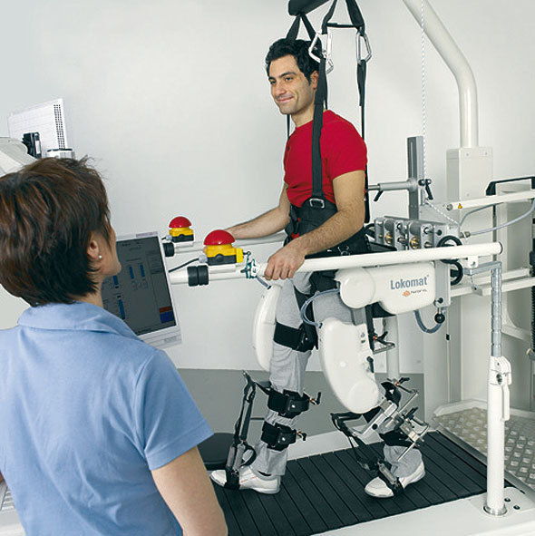
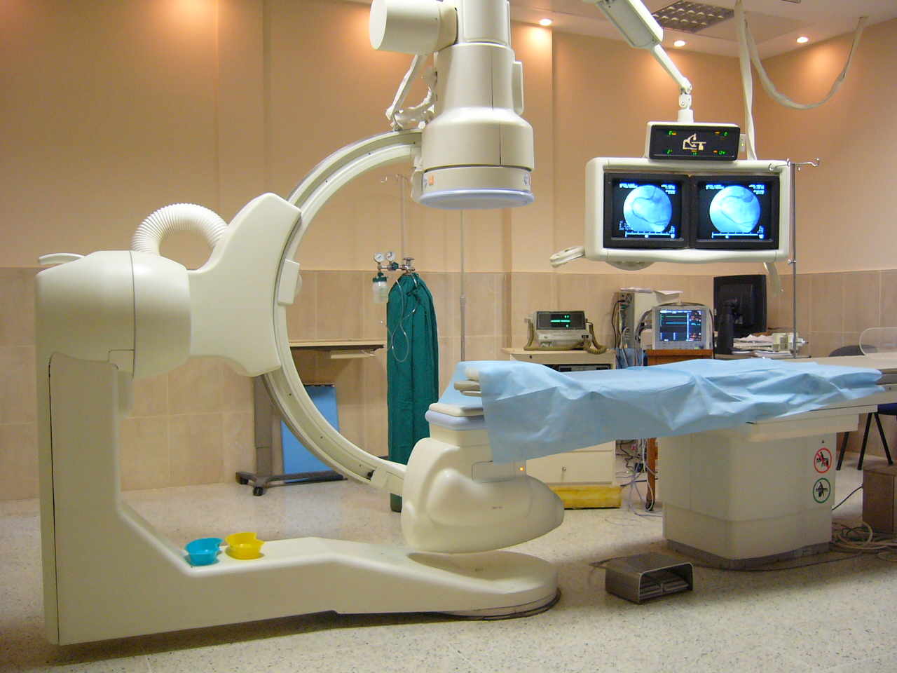

Technology in the clinic has been shown to help doctors spend more time with each patient. With telemedicine, smart algorithms and health trackers making it possible to stream medical data from every home, patients wouldn’t have to wait weeks for a doctor’s appointment or have to diagnose themselves, but would get the help they need near instantly. Studies have shown that medical outcomes increase and costs go down when technology like artificial intelligence is combined with the human touch of physicians.
One of the most promising disruptive information technologies, the Personal Health Record (PHR), has advanced efforts to put electronic medical records in place throughout the health care system. Omid Moghadam, director of PHR programs at Intel, describes a PHR as a record “owned and controlled by the patient that incorporates data the patient enters, but also includes authenticated information. . . . from all of the places the patient is involved with—insurance company, hospital, doctors’ offices, labs, and so forth”
Here are a few examples of Disruptive Technologies that have innovated the heath and medicine community:
VeinViewers projects near-infrared light is absorbed by blood and reflected by surrounding tissue. The information is captured, processed and projected digitally in real time directly onto the surface of the skin.

Brain Computer Interface (BCI) in combination with an Occulus Rift virtual reality device, with a robotic Exoskeleton

Computed tomography (CT) of the head uses special x-ray equipment to help assess head injuries